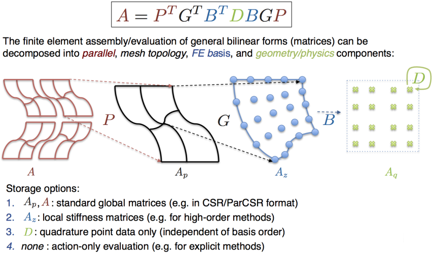

Tensor-Based Operator Assembly and Evaluation
Overview
The high performance (HPC) versions of the example codes in the miniapps/performance directory
use a set of templated classes to efficiently implement the inner-most portion
() of the fundamental finite element (FE) operator decomposition:

We take advantage of the tensor-product structure of both the finite element basis and the quadrature rule to efficiently apply the action of without necessarily computing its entries. This is generally know as sum factorization. In the case where we pre-compute and store the matrix, we call the algorithm partial assembly.
Template implementation
Below is a short description of the header files that are part of the initial reference implementation of the tensor-based finite element assembly and evaluation algorithms.
config/tconfig.hpp
Configuration macros including the specification of the template blocking size (currently used in the matrix-matrix multiply).
general/tassign.hpp
Helper templated function to allow single implementation of multiple assignment operations on tensor entries.
linalg/tlayout.hpp
Classes describing fixed size tensor layouts. Implemented are standard strided layouts for 1D/2D/3D/4D tensors. Layouts support reshape and sub-tensor operations independent of the actual data storage.
This header also contains another set of "vector layout" classes for
converting scalar data indices into multi-component (vector) data indices.
They are used to describe the layout of vector GridFunctions on global
degrees of freedom (similar to the Ordering class). In the FE operator
decomposition, these classes are used by the templated *_FiniteElementSpace
classes (see fem/tfespace.hpp below) to implement the actions of and
in the case of vector (multi-component) input and/or output fields.
linalg/tmatrix.hpp
Small matrix operations, defined by specializations: determinant, adjugate,
etc. Matrix-matrix multiply, C = A.B, simple and blocked version.
linalg/ttensor.hpp
Fixed-size container classes TVector, TMatrix, TTensor3, TTensor4 for
1D/2D/3D/4D tensors stored in column-major layout.
Element-wise tensor operations: A {=,+=,*=} scalar; A {=,+=,*=} B. The
latter allows different input and output layouts. With suitable layouts this
can be used to permute (transpose) tensors, extract sub-tensors, etc.
The tensor contraction/product operations:
Mult_1_2:Mult_2_1:TensorAssemble: andTensorProduct:
mesh/tmesh.hpp
The Mesh object templated by the finite element space and layout of the
nodes. Provides MatchesGeometry() and MatchesNodes() functions to verify
if compiled and runtime mesh agree.
fem/tintrules.hpp
Quadrature rules templated by geometry (triangles, quads, etc.) and integration order.
fem/tfe.hpp
H1 and L2 finite elements templated by geometry and polynomial order.
fem/tfespace.hpp
Template *_FiniteElementSpace classes providing the mappings between global
and local (element) degrees of freedom for H1 continuous and L2 discontinuous
spaces. In the FE operator decomposition, these classes provide the element
local action of (Extract methods) and (Assemble methods).
fem/tcoefficient.hpp
Templated versions of classes derived from the abstract class Coefficient.
It encapsulates physical quantities like material properties, sources,
boundary/initial conditions, etc. Its main functionality is to evaluate the
coefficient at all quadrature points in an element, which is then used in the
evaluation of the matrix.
fem/teltrans.hpp
Element transformation class, templated on a mesh type and an integration
rule. It is constructed from a mesh (e.g. class TMesh) and shape evaluator
(e.g. class ShapeEvaluator) objects. Allows computation of physical
coordinates and Jacobian matrices corresponding to the reference integration
points. The desired result (a combination of coordinates and/or Jacobian
matrices at quadrature points, element attribute and/or element index) is
specified through the template sub-class Result and stored in an object of
the same type. The idea of this approach is to eliminate unnecessary
evaluations if they are not needed. The need is determined based on what the
particular "users" need. The "users" are the templated Coefficient and
Kernel (see fem/tbilininteg.hpp below) classes which specify what they
need through static constant boolean variables, e.g. uses_coordinates,
uses_Jacobians, etc.
fem/tevaluator.hpp
Classes for evaluating FE basis, ShapeEvaluator, and finite element
functions, FieldEvaluator, and their derivatives at quadrature points,
templated by a finite element class and an integration rule class. These
correspond to the and matrices above. Quads and hexes use the
tensor-product structure for fast evaluation.
fem/tbilininteg.hpp
Kernel classes (e.g. mass, diffusion) that represent the matrix from
the above FE operator decomposition. These classes also specify the type of
the local operator that needs to be applied before and after the matrix -
these are the and matrices, respectively. The product
is the local element matrix, which is the result when
using the BilinearFormIntegrator classes. This specifications of the types
are given by static constant boolean variables, e.g. in_values and
out_values. The Kernel classes provide the following methods:
Action: evaluate the action of without explicitly storing the partially assembled data; this is needed for matrix-free action.Assemble: evaluate the partially assembled data, , which is kernel-specific: e.g., for mass, the data is one scalar per quadrature point; for diffusion, the data is one matrix (in -dimensions) per quadrature point.MultAssembled: perform the action of using the pre-computed partially assembled data.
fem/tbilinearform.hpp
Bilinear form operator, templated on the mesh, finite element space, integration rule and bilinear form integrator. Corresponds to the matrix above. Provides various assembly and evaluation schemes:
MultUnassembled: matrix-free action using the mesh nodes and the input vector.Assemble,MultAssembled: partial assembly and operator action using the partially assembled data at quadrature points and the input vector.AssembleMatrix(DenseTensor &): assemble the local element matrices and store them asDenseTensor.AssembleMatrix(SparseMatrix &): assemble the operator in a global (CSR)SparseMatrix.AssembleBilinearForm(BilinearForm &): assemble element matrices and add them to the bilinear form.
miniapps/performance/makefile
By default make builds the example drivers with the compiler used to
compile MFEM. If g++ was used, a pseudo-code dump file with the optimized
code will be generated (option -fdump-tree-optimized-blocks). The g++
option --param max-completely-peel-times=3 prevents the compiler from
unrolling innermost loops (of size greater than 3), allowing the compiler to
vectorize them. Some options for optimization/vectorization with the clang
compiler are also included.
miniapps/performance/ex*.cpp
High-performance templated versions of the corresponding examples/ex*.cpp
example codes.